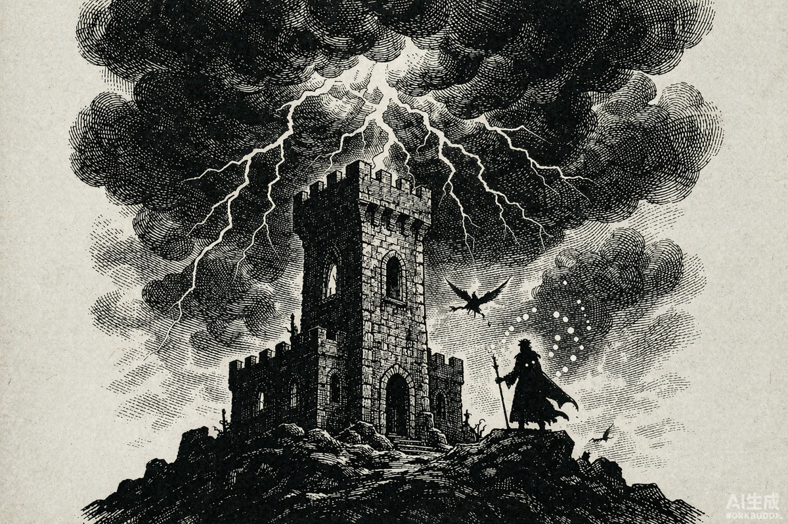
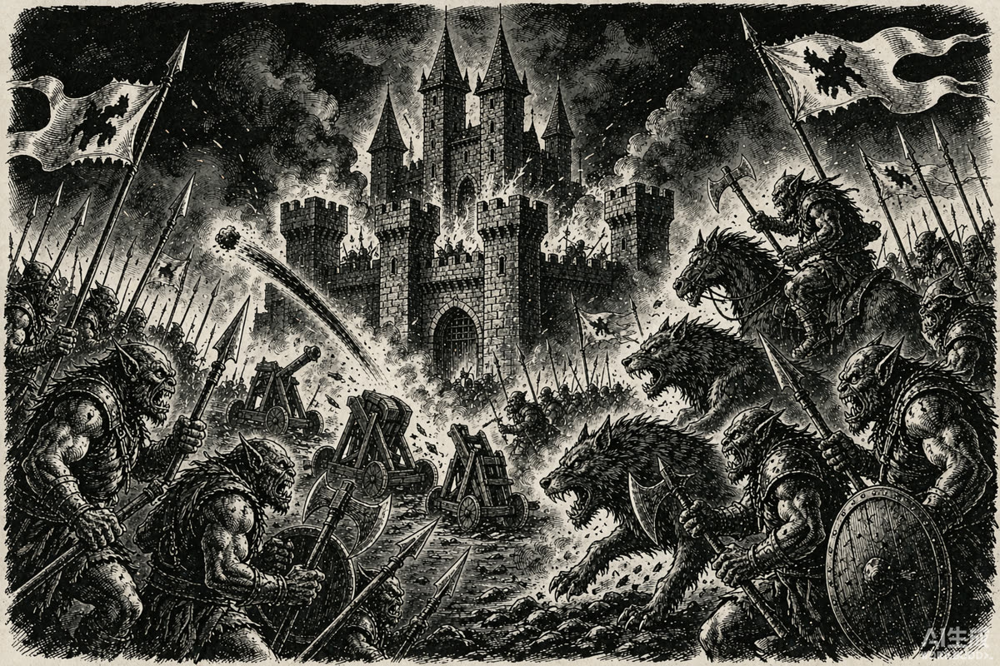

暴雪 1994 年经典 RTS《魔兽争霸：兽人与人类》全战役回顾 · 黑暗之门如何打开，第一次战争如何打响，又如何以"反派"获胜收场。
《魔兽争霸：兽人与人类》发售于 1994 年 11 月，晚于西木的《沙丘 2》两年，是暴雪最早的即时战略游戏，还开创了局域网对战的玩法。原版要在 DOS 下运行，2019 年暴雪与 GOG 合作推出了依托 DOSBox 的数字版。
时代局限导致游戏容量有限，剧情描述被大大压缩——更详细的故事被写进了一代说明书和《魔兽争霸 2》的说明书。要还原整个故事，得把游戏战役和这些"纸面设定"拼在一起看。
战役分人类和兽人两条线，各 12 关。与魔兽 3 不同，此时战役剧情不是线性的，双方建筑和单位大多是镜像，部分关卡剧情甚至互相冲突——两条线拼起来，才是完整的第一次战争。
兽人线最终攻破暴风要塞，迦罗娜在暗影议会控制下刺杀莱恩国王——第一次战争以部落胜利告终。战败的安度因·洛萨带着残部和难民渡海北上洛丹伦，联盟的故事，那才是下一部。
★ 游戏档案 · WARCRAFT: ORCS & HUMANS
发售1994 年 11 月（晚于《沙丘 2》两年）
类型 / 平台即时战略 · DOS（2019 年 GOG 数字版）
战役人类 / 兽人双线 × 各 12 关，互为镜像
人类与兽人两条战役各 12 关，互为镜像；一局一局推下去，第一次战争的全貌也就拼出来了。
一代开场动画确立了这个世界叫艾泽拉斯——艾泽拉斯王国其实就是后来的暴风王国。暴风骑士团与北郡修道院的牧师们以荣誉和正义服务子民，王国维持着长久和平。直到某天，兽人突然出现：没人知道这些肮脏的生物来自哪里，他们挥舞斧头长矛，骑着像无月之夜一样黑的巨狼，使用源自扭曲虚空的邪恶魔法。两股力量在狡猾、智慧与蛮力的较量中碰撞——胜利者将统治整个艾泽拉斯。
兽人的故乡叫德拉诺，身体里流淌着玛诺洛斯的血液——最初人类以为他们是某种巨魔，谁能想到其实是"外星人"。而门之所以能打开，绕不开一个名字：麦迪文。
· 559 年：神秘的艾格文与宫廷法师聂拉斯·艾兰生下麦迪文。母亲是活了近千年的守护者，曾战胜黑暗泰坦萨格拉斯——却被其灵魂附身，萨格拉斯趁隙潜入了麦迪文体内；
· 564 年：莱恩·乌瑞恩出生，后来的暴风国王；
· 571 年：麦迪文力量觉醒，能量毁天灭地，父亲为阻止他耗尽生命，麦迪文昏迷六年；
· 577 年：麦迪文苏醒，赶上莱恩 13 岁生日，送他一个黑曜石沙漏——"只要沙子不漏完，暴风城的王权就是永恒的"；
· 583 年：受萨格拉斯影响的麦迪文联系上兽人术士古尔丹，以萨格拉斯之墓的位置为交换，打开了黑暗之门。就在这一刻，沙漏里的沙子全部流空。兽人围攻暴风城，老国王拜拉瑟恩战死；
· 584-593 年：莱恩登基，兽人被击退至黑色沼泽，双方小规模冲突不断。593 年，古尔丹把争吵的氏族团结在傀儡"毁灭者黑手"之下，部落正式开战。
 ▲ 583 年，黑暗之门开启，兽人涌入艾泽拉斯（插画：黑白版画风）
兽人线的玩家身份很明确：奥格瑞姆·毁灭之锤。第一章"兽人部落向北进军"从悲伤沼泽开始——黑手命令奥格瑞姆建立前哨站，任务朴素到只需要造 6 个农场和 1 个兵营。
悲伤沼泽建站 → 无主之地 → 格兰村（解锁神庙与死灵法师，复活尸体变骷髅兵）→ 死亡矿井（黑手的女儿格里塞达与食人魔私奔，奥格瑞姆奉命带小队下矿"清理门户"）→ 赤脊山（夺回被围前哨，解锁狼骑兵）→ 阳光湿地（抢占法师塔，解锁投石车——小镇居民"像成熟的桃子等待采摘"）。
战争迷雾不会再生；要按住 CTRL 才能框选、上限 4 个单位（UP 主写稿时才发现，之前全程一个一个点）；移动不是右键一点，而是按 M 再左键点地图；单位死亡留下会逐渐腐败的尸体；近战单位警戒范围极小——"有军有难，不动如山"。
人类线前期玩家是被称为"王冠守护者"的无名指挥官，后期与洛萨的经历高度重合——救出洛萨之后，玩家便接过了这位王室英雄的视角。防线从格兰村守卫战开始：弩手、牧师（治疗+对恶魔伤害）、骑士、法师（可召唤水元素）逐关解锁，一路从保卫格兰村打到反攻吉罗斯、深入死亡矿井救出洛萨、保住北郡修道院。
邪恶的麦迪文开始抽取大地生命力。洛萨带队杀进卡拉赞，途中要稳住超强火元素，塔底麦迪文召唤恶魔顽抗，最终死于围殴。小说《最后的守护者》里，最先发现问题的是卡德加和迦罗娜——肉身被毁后，萨格拉斯现身，也被击退。同一时间，古尔丹正试图从麦迪文脑中窃取萨格拉斯之墓的坐标，却因他的死亡陷入昏迷。
▲ 583 年，黑暗之门开启，兽人涌入艾泽拉斯（插画：黑白版画风）
兽人线的玩家身份很明确：奥格瑞姆·毁灭之锤。第一章"兽人部落向北进军"从悲伤沼泽开始——黑手命令奥格瑞姆建立前哨站，任务朴素到只需要造 6 个农场和 1 个兵营。
悲伤沼泽建站 → 无主之地 → 格兰村（解锁神庙与死灵法师，复活尸体变骷髅兵）→ 死亡矿井（黑手的女儿格里塞达与食人魔私奔，奥格瑞姆奉命带小队下矿"清理门户"）→ 赤脊山（夺回被围前哨，解锁狼骑兵）→ 阳光湿地（抢占法师塔，解锁投石车——小镇居民"像成熟的桃子等待采摘"）。
战争迷雾不会再生；要按住 CTRL 才能框选、上限 4 个单位（UP 主写稿时才发现，之前全程一个一个点）；移动不是右键一点，而是按 M 再左键点地图；单位死亡留下会逐渐腐败的尸体；近战单位警戒范围极小——"有军有难，不动如山"。
人类线前期玩家是被称为"王冠守护者"的无名指挥官，后期与洛萨的经历高度重合——救出洛萨之后，玩家便接过了这位王室英雄的视角。防线从格兰村守卫战开始：弩手、牧师（治疗+对恶魔伤害）、骑士、法师（可召唤水元素）逐关解锁，一路从保卫格兰村打到反攻吉罗斯、深入死亡矿井救出洛萨、保住北郡修道院。
邪恶的麦迪文开始抽取大地生命力。洛萨带队杀进卡拉赞，途中要稳住超强火元素，塔底麦迪文召唤恶魔顽抗，最终死于围殴。小说《最后的守护者》里，最先发现问题的是卡德加和迦罗娜——肉身被毁后，萨格拉斯现身，也被击退。同一时间，古尔丹正试图从麦迪文脑中窃取萨格拉斯之墓的坐标，却因他的死亡陷入昏迷。

▲ 卡拉赞之塔：最后的守护者在此陨落（插画：黑白版画风）
黑手越来越蠢，再让他带队只有毁灭。奥格瑞姆借暗影议会暗杀之机发起生死决斗，亲手碾碎黑手的头颅成为新任大酋长，暗影议会出逃。关键反转是：若没有这次背刺，洛萨的反击将一路畅通无阻——兽人的内斗，反而让战争多打了好几年。
人类线走到第 10 关，探子来报：莱恩国王在暴风要塞被迦罗娜刺杀，临终任命守护者为国王——玩家直接登基。随后水元素平推黑石塔，黑手残部投降，暴风城连庆数天。但这是"人类视角"的结局；把兽人线打完，才是正史。
兽人线的下半场是清算：先在北郡修道院擒获迦罗娜，再顶住人类"隐身术"的恶心偷袭，随后夷平人类营地训练场、碾过闪金镇和月溪镇，切断暴风城的命脉。最终决战——投石车就位，大地震颤，奥格瑞姆指挥各氏族围攻暴风要塞。要塞被夷为平地，趁民兵救火之际，迦罗娜刺杀了莱恩国王。结局文案写得很直白：你用战刃击溃虚弱的领袖，把尸体扔进护城河；庆功宴上，葡萄酒像血液一样流淌。

▲ 兽人围攻暴风要塞：第一次战争的终局（插画：黑白版画风）
还有个藏在支线里的"真结局"：奥格瑞姆本就怀疑暗影议会与黑暗势力结盟，加上暗影议会谋杀了杜隆坦一家，他从迦罗娜口中拷出暗影议会的位置后，把术士们屠戮殆尽。古尔丹将这些死去的术士灵魂注入人类骑士尸体——第一代死亡骑士就此诞生，并假装向奥格瑞姆效忠。
魔兽 1 的双方建筑、单位、任务大多互为镜像，以当年的眼光游戏素质完全担当得起，但如果冲着玩法去，先做好被 1994 年操作方式劝退的准备。它真正的价值是开了个头：战败的洛萨带着残部和难民渡海北上，在洛丹伦王国集结起最早的联盟——那就是《魔兽争霸 2》的故事了。
回顾的是游戏，怀念的是童年与友谊——这也是这次回顾最好的注脚。
· 本文结合一代说明书、《魔兽争霸 2》补充设定与官方编年史整理；
· 暴雪设定多次改动（"吃书"），时间线采用修正编年史口径（黑暗之门开启当年为元年）；
· 插图为黑白版画风格示意图，非游戏原画面。